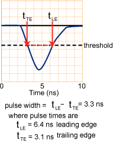

The signal width, (sometimes called time over threshold), is the total time the signal is "over" a pre-defined threshold value.
This graph shows the signal at zero for 3 nanoseconds and then it rapidly goes to about 5.5 negative units. The threshold is at 2.5 negative units. The moment that the signal crosses the threshold, the electronics begin to measure it. While -5.5 is certainly smaller than -2.5, physics jargon still calls this "over threshold."
